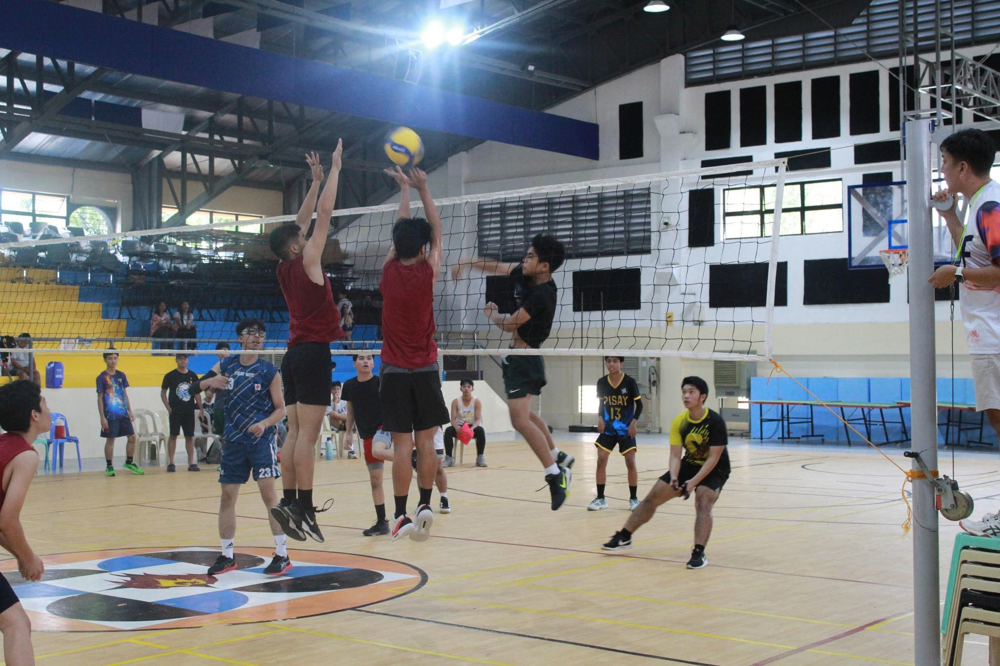

PISAY SPORTS

Citymeet tryouts
Last Wednesday, November 29, 2023, was the start of the citymeet tryouts. Sports like basketball, volleyball, football, badminton, taekwondo, tennis and many other sports held their tryouts.
Sports that are Mostly Played by the Scholars
PSHS-WVC stands for Philippine Science High School - Western Visayas Campus. It is a prestigious public high school located in Iloilo City, Philippines, specializing in STEM education for gifted students from Western Visayas and beyond.
Philippine Science High School is a research-oriented and specialized
public high school system in the Philippines that operates as an attached
agency of the Philippine DOST.
